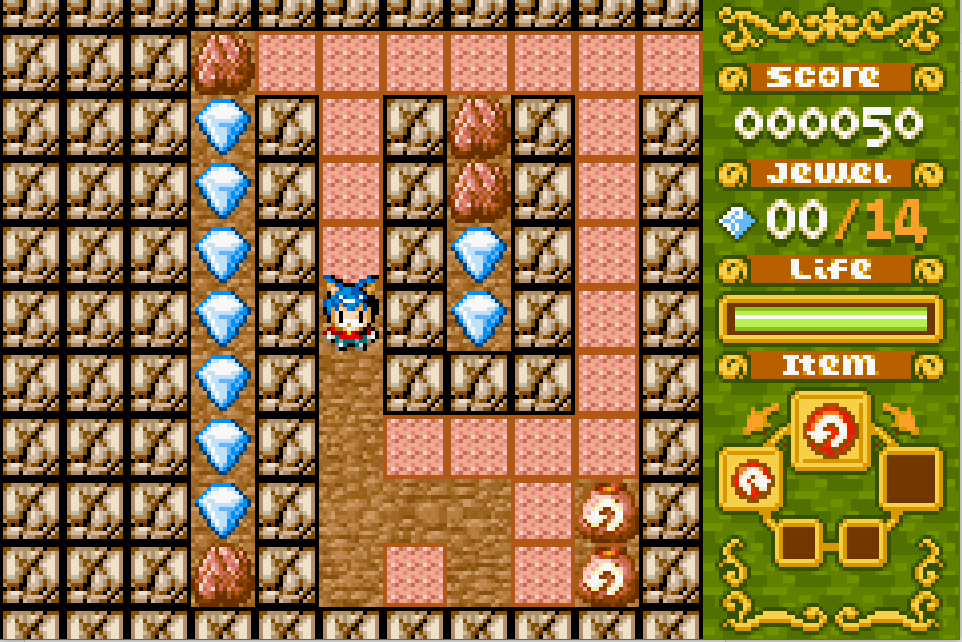
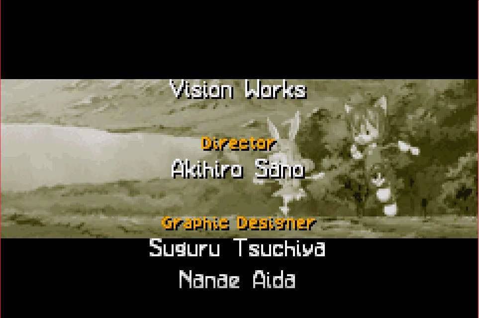
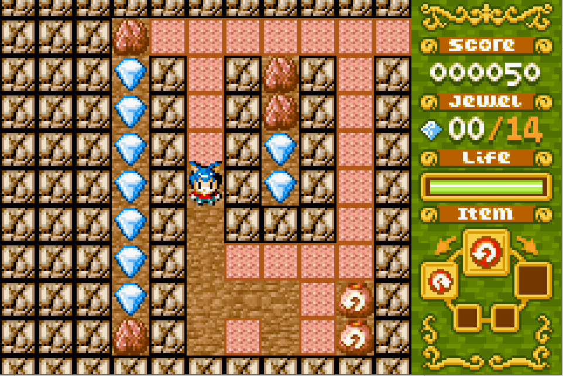
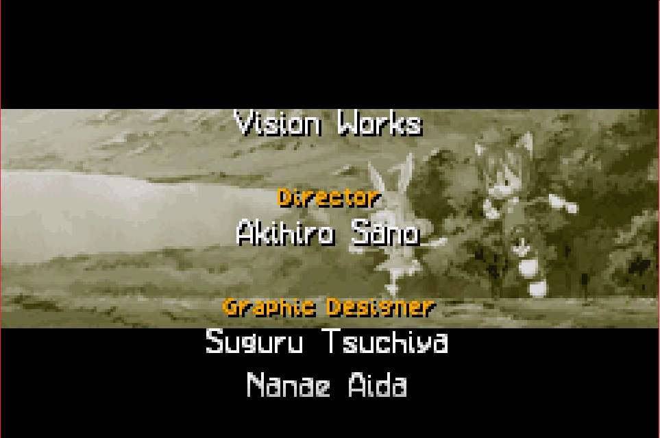

Complete on 2017-06-06
Complete on 2017-06-06
3 / 5
Release Date: Sep 16, 2002
Meta Score: 79
Complete on 2017-06-06
3 / 5
Release Date: Sep 16, 2002
Meta Score: 79
 



Boulder Dash Ex is a remake of the classic 8-bit Atari game Boulder Dash (no surprises there). It seems to be relatively obscure, although it has quite a good metacritic score, that comes from very few reviews. There also isn't a Wikipedia page for it (although there is one for Boulder Dash, the original game).
I beat the main story mode of Boulder Dash Ex. There's also a tutorial, and a multiplayer battle mode. Finally there's a classic mode which appears to be a closer representation of the original game.
The campaign has a story, which is weird and seemingly unrelated to the gameplay itself. It feels very tacked on over the top. You play a blue haired cat boy named Alex who's out to rescue his pink-haired bunny girlfriend from the "Dark King". To do this he needs to collect shards of a magical amulet which take the form of gems.
The gameplay is a hybrid action/puzzler. You dig out earth, collect gems, and avoid getting crushed by boulders or killed by enemies. The boulders and gems fall down in (mostly) predictable ways, and enemies patrol with set patterns, like following walls or bouncing up and down. In each level you have to collect a minimum quota of gems and then reach the exit mirror.
It's basically a puzzler but there are certain actiony elements. Avoiding and killing enemies by dropping rocks on them can be more based on reflexes and luck than puzzle skill. The fundamental gameplay is OK, with a few flaws. Boulders and other items fall quite slowly, and some can be held in mid-air if an enemy keeps bumping into them. This leads to quite counter-intuitive behaviour.
You play across multiple worlds, each of which has a different tileset. One annoying thing is that enemies with the same behaviour look totally different in different worlds, meaning you always have to use trial and error every time you encounter a new enemy, even though it's likely the same as one you've seen before. The world are also pretty uninspired. Forest, desert, water, ice, lava, dark castle...
Other than that, my main criticism is that the game feels a bit stretched, and doesn't really introduce any new mechanics in the latter part of the game. I was quite enjoying it until the last 2 worlds, which started to feel like a slog.